Panduan Penggunaan Web CMS E-Agenda LHK
Sistem Manajemen Laporan Harian Kinerja Guru Terpadu berbasis Cloud Computing, Database Cepat D1, dan Google Drive Storage Otomatis.
Pendahuluan & Arsitektur Sistem
Mengenal platform E-Agenda LHK dan infrastruktur teknologi cloudE-Agenda LHK CMS dirancang sebagai solusi modern, efisien, dan ramah pengguna bagi dewan guru dan pimpinan sekolah (Kepala Sekolah/Pengawas) dalam mendokumentasikan, merekap, dan mengarsipkan Laporan Harian Kinerja secara terpusat, transparan, dan akuntabel.
Performa Super Gesit
Didukung oleh Cloudflare Edge Network global dengan latensi rendah di jaringan pedesaan sekalipun.
Integrasi Google Drive
Setiap guru memiliki struktur 4 sub-folder privat di Google Drive tanpa batas kuota server web.
Cetak Dokumen Lengkap
Ekspor instan ke format Google Docs live-editable dan Microsoft Word (.docx) resmi siap tanda tangan.
Progressive Web App
Dapat dipasang ke beranda smartphone Android, iPhone, tablet, hingga PC dengan ukuran sangat ringan (< 2 MB).
https://lhk-pak.cmsmanager.my.id
Saluran koordinasi resmi dewan guru dan bantuan teknis penggunaan CMS.
Panduan Instalasi Aplikasi (PWA)
Pasang aplikasi di Smartphone (Android/iOS) dan Laptop/PCAplikasi mengadopsi teknologi Progressive Web App (PWA). Anda tidak perlu repot mencari installer besar di Play Store atau App Store.
- Buka browser Google Chrome di smartphone Android Anda.
- Kunjungi alamat web CMS: lhk-pak.cmsmanager.my.id
- Tekan tombol hijau "Pasang Aplikasi ke Layar Utama" di bagian bawah form login.
- Jika tidak muncul, sentuh menu titik tiga (⋮) di kanan atas Chrome > pilih "Tambahkan ke Layar Utama" atau "Pasang Aplikasi".
- Buka browser bawaan Safari (wajib Safari).
- Kunjungi alamat web CMS.
- Sentuh ikon Share (kotak dengan panah ke atas di bagian navigasi bawah iPhone).
- Gulir ke bawah dan ketuk opsi "Add to Home Screen" (Tambahkan ke Layar Utama).
- Tekan "Add" di pojok kanan atas layar. Selesai!
- Buka Google Chrome atau Microsoft Edge di laptop Anda.
- Di sisi kanan kolom alamat (address bar), klik ikon Install Aplikasi ().
- Aplikasi akan berjalan dalam jendela mandiri layaknya software bawaan komputer yang bersih dari tab browser.
Halaman Login & Akses Akun
Prosedur autentikasi dan perlindungan kredensial guruSetiap guru memiliki kredensial akun tersendiri yang didaftarkan langsung oleh Admin / Operator Sekolah.
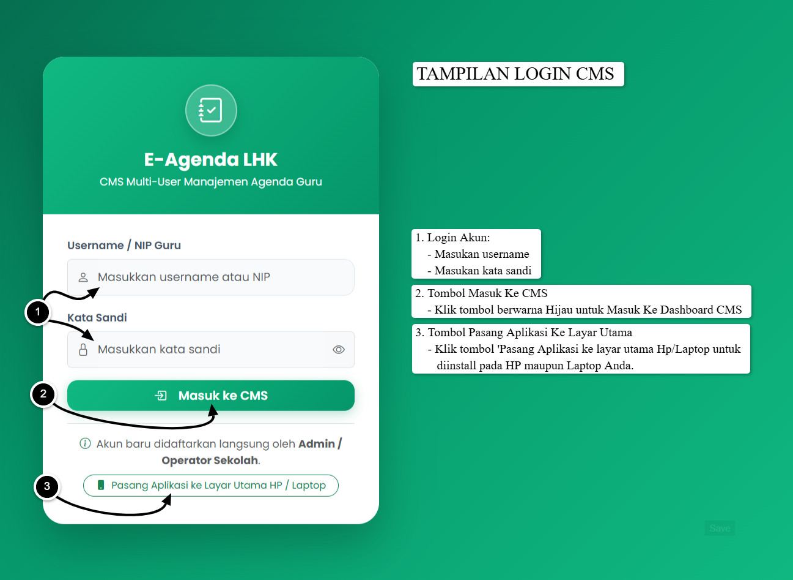
Panduan Masuk Sistem:
- Ketikkan Username atau NIP Guru pada baris isian pertama.
- Masukkan Kata Sandi. Klik ikon mata () jika ingin menampilkan karakter sandi.
- Klik tombol "Masuk ke CMS". Sistem akan langsung mengarahkan Anda ke Dashboard Utama.
Antarmuka Dashboard Guru
Pusat monitoring kinerja harian, akumulasi jam kerja, dan pintasan cepatDashboard menyajikan visualisasi ringkasan kinerja yang mudah dipahami. Anda dapat beralih antara tampilan PC dan Ponsel di bawah ini:
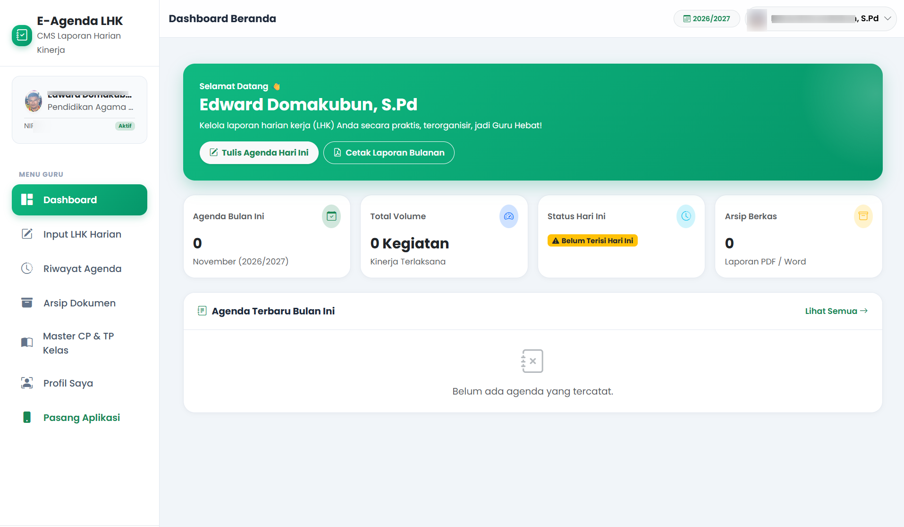
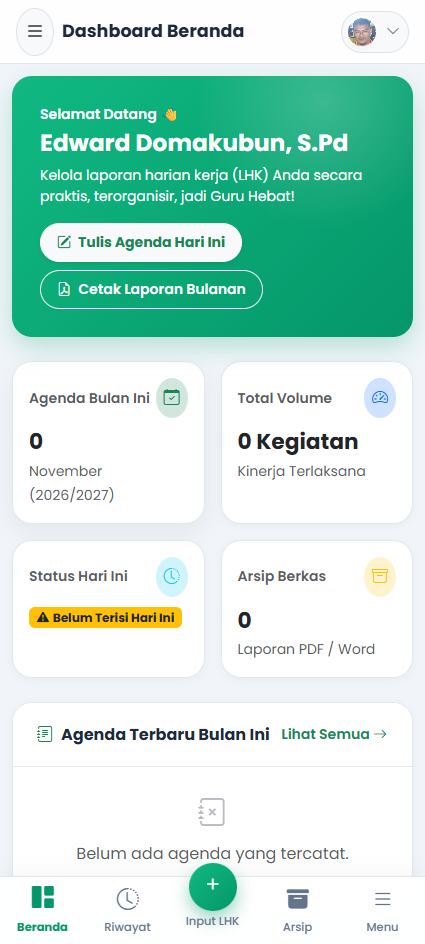
Kalkulasi Otomatis
Total jam mengajar, menit dinas, dan hari efektif dihitung secara realtime dari basis data agenda Anda.
Target Dinas Bulanan
Dilengkapi bilah persentase capaian jam dinas untuk memudahkan guru memantau pemenuhan target kerja.
Pengisian LHK Harian (Wizard 4 Langkah)
Proses pengisian kegiatan belajar dengan kompresi foto otomatisFormulir dirancang terstruktur menjadi 4 tahapan berurutan agar pengisian berlangsung cepat, rapi, dan bebas dari kesalahan entri.
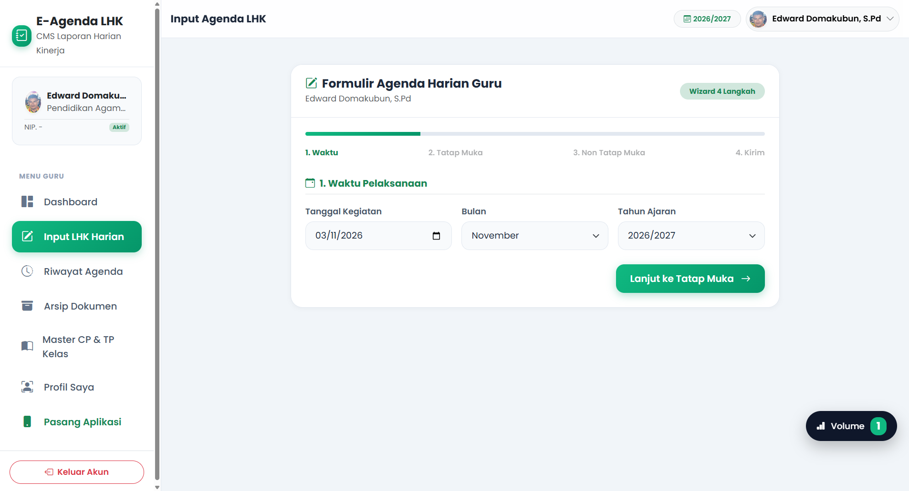
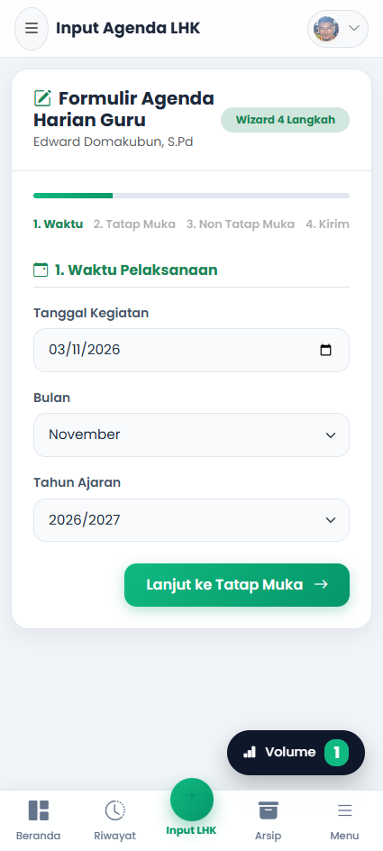
Pilih tanggal kegiatan, tentukan jam mulai dan jam selesai, serta pilih kelas pembelajaran. Durasi waktu langsung terhitung otomatis!
Pilih CP dan TP yang tersinkronisasi otomatis dengan katalog Master Kurikulum sekolah Anda.
Jelaskan kegiatan belajar siswa secara lugas beserta capaian hasil nyata pembelajaran pada hari tersebut.
Pilih foto dari kamera atau galeri. Sistem langsung melakukan kompresi otomatis di HP menjadi ~250 KB sebelum diunggah ke Google Drive.
Simulasi Interaktif: Kalkulator Durasi Jam Mengajar
Coba cara kerja algoritma otomatis E-Agenda LHK dalam mengonversi jam mulai dan selesai ke dalam format volume menit dan jam dinas:
Edit Data Agenda & Manajemen Foto Drive
Koreksi riwayat kegiatan dan otomasi kebersihan penyimpanan Google DrivePengeditan Cepat
Data yang keliru dapat disunting kapan saja. Formulir edit mengusung wizard serupa sehingga guru cukup mengganti data yang diperlukan tanpa mengulang input dari awal.
Pembersihan Otomatis Drive
Jika foto bukti diganti, file lama akan otomatis dibuang ke tempat sampah Google Drive guru agar ruang penyimpanan Drive tetap hemat dan rapi.
Riwayat Agenda & Filter Kelas
Pencarian cepat, filter rombel, dan arsip kartu kegiatan harian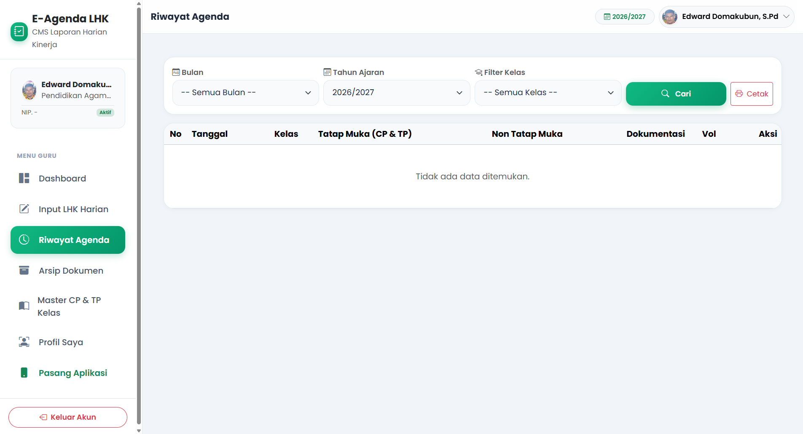
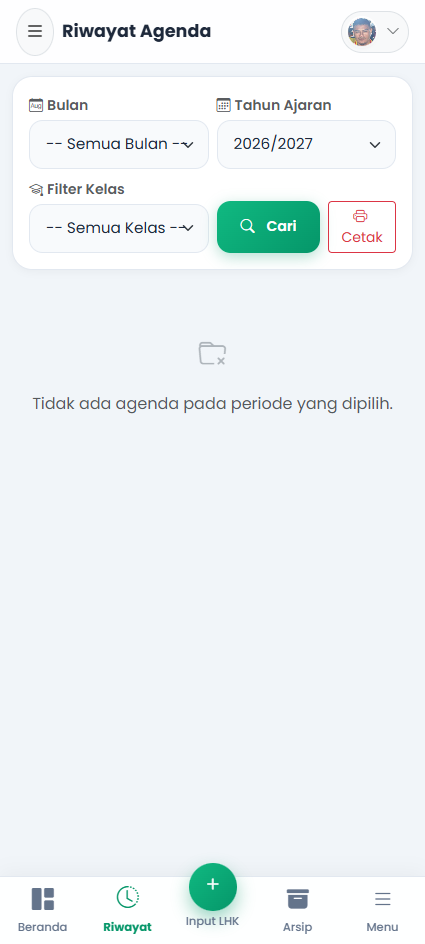
Arsip Dokumen & Cetak Laporan Bulanan
Penyusunan berkas resmi ke format Google Docs dan Word (.docx) secara instanPusat pembuatan dan unduhan Laporan Kinerja Bulanan. Sistem menyusun tabel berlembar-lembar lengkap dengan kop sekolah, rekapitulasi jam, foto kegiatan, dan lembar pengesahan Kepala Sekolah.
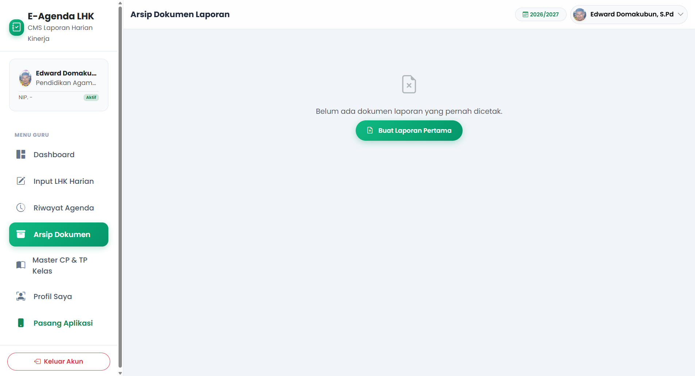
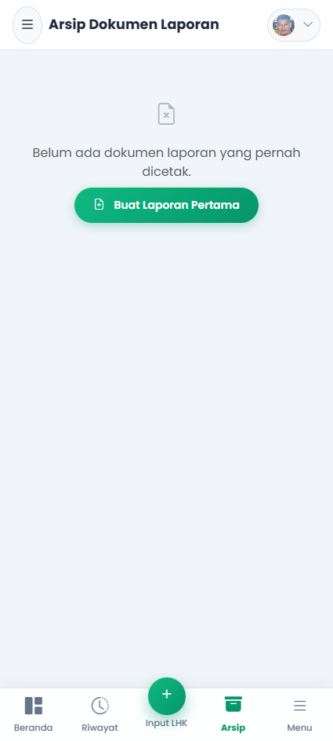
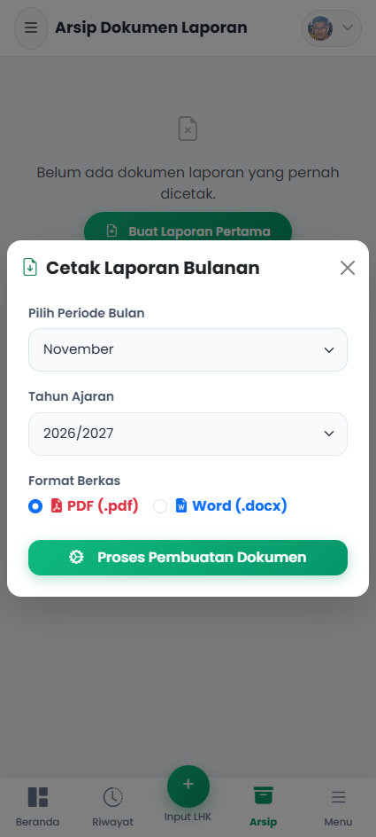
Master Capaian & Tujuan Pembelajaran (CP & TP)
Katalog kurikulum terpadu untuk efisiensi pengisian agenda guruCukup daftarkan CP dan TP sekali di master kurikulum ini, maka seluruh opsi akan selalu muncul pada menu pilihan cepat saat guru mengisi agenda kelas.
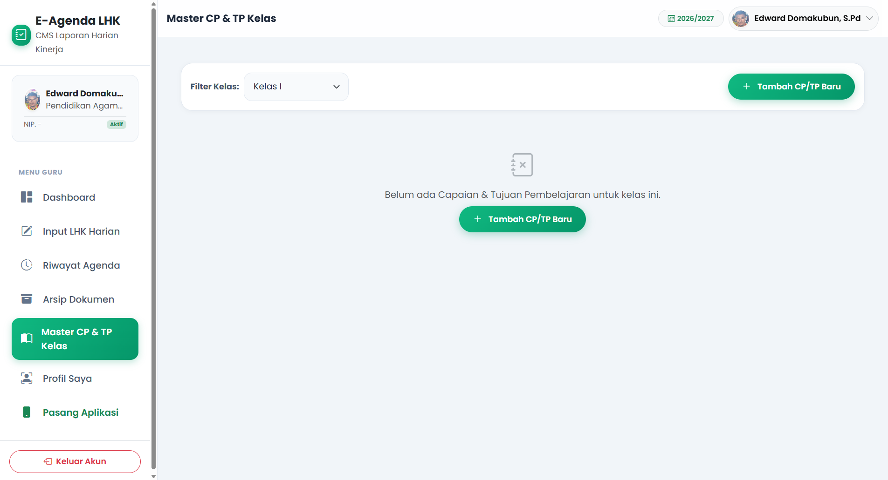
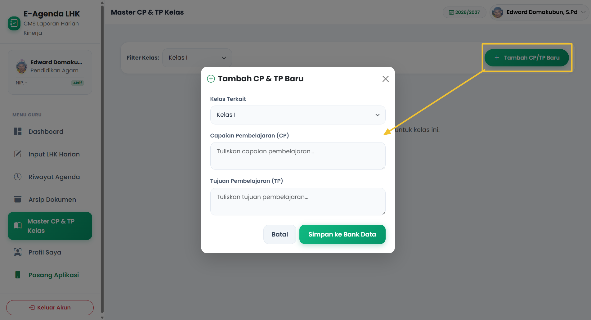
Pengaturan Profil & Sandi Guru
Manajemen identitas dinas dan privasi keamanan akun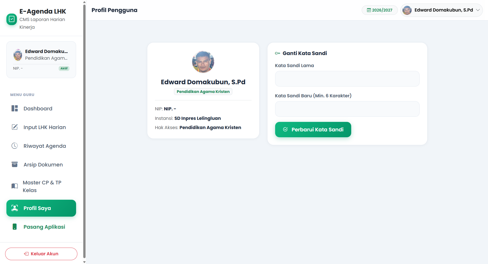
Panduan Ubah Kata Sandi Pribadi:
- Masuk ke menu "Profil Saya".
- Ketikkan kata sandi saat ini pada kolom Kata Sandi Lama.
- Masukkan kata sandi baru minimal 6 karakter pada kolom Kata Sandi Baru dan ketik ulang untuk konfirmasi.
- Klik tombol "Perbarui Kata Sandi".
Navigasi Ponsel (Drawer Menu Mobile)
Akses seluruh modul aplikasi dari layar smartphone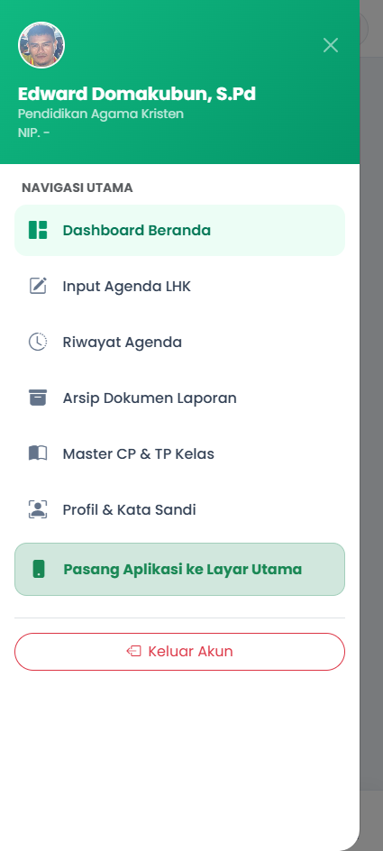
Pintasan Navigasi di Smartphone:
- Dashboard: Pemantauan jam dinas realtime.
- Input LHK: Input kegiatan 4 tahapan.
- Riwayat: Arsip kartu kegiatan dan filter kelas.
- Arsip Dokumen: Ekspor instan ke Google Docs & Word (.docx).
- Master CP/TP: Katalog kurikulum kelas.
- Profil & Sandi: Pengaturan akun pengajar.